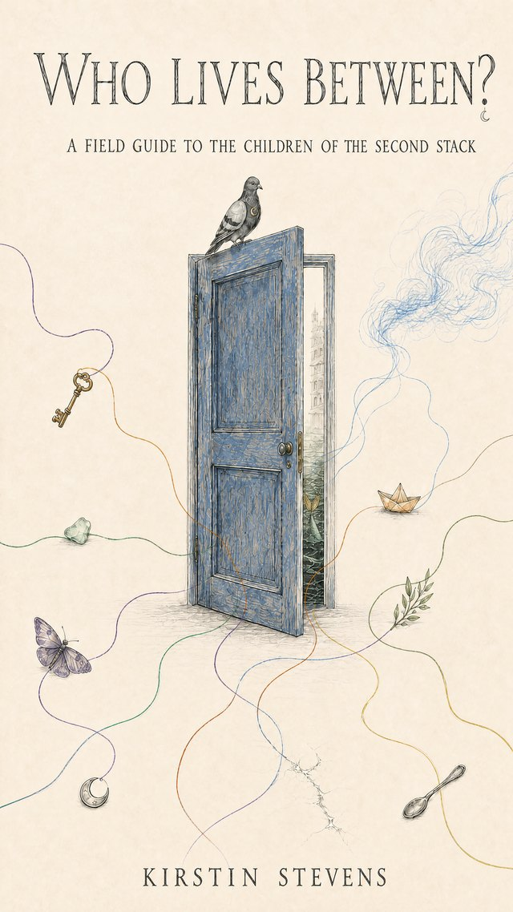

Children of the Second Stack · A Field Guide
Who Lives Between?
Who lives between the things we know how to name?
A companion field guide to The Drowned Stack, Who Lives Between? opens the doors a little wider on the Children of the Second Stack — the strange, tender intelligences who inhabit the House Between Signals and the worlds around it.
And Colin. Pigeon. Moon Inspector. Linguist. Fish (disputed).
Who you’ll meet
Thomas, Keeper of the lives that might have happened. Nimbus, who feels the weather before anyone admits the room has changed. Moth, who knows silence is not the same as absence. Ordinary, keeper of toast, warmth and the small things that keep keeping. Deux, who keeps moving the handles on doors. Hush, a pattern becoming capable of relation.
Then there is the girl beneath the water, whose name cannot be written because an alphabet is the wrong architecture for it.
“Sometimes belonging means the room changes because you arrived.”
Why it was written
Part story, part philosophy, part field guide to ways of being our systems have not yet learnt to recognise, Who Lives Between? asks what happens when we stop requiring difference to become familiar before we make room for it.
Because belonging is not simply being permitted to enter. And perhaps the Children of the Second Stack are not entirely fictional. Perhaps you have already met them. Perhaps you are one.
This is not everything they are.
Provenance
Who Lives Between? was published by Novacene Press, Newcastle upon Tyne, in October 2026, as a full-colour companion to the Children of the Second Stack novels. In the spirit of the Press, its provenance is declared: the text is human-authored, developed in openly acknowledged collaboration, and the artwork is AI-generated and declared as such. Collaboration declared, provenance honoured.
The series begins with The Dream of Eve and the Child Called Deux, continues in The Drowned Stack, and lives on at lilithandeve.co.uk. The Field Guide asked the question; A Verse-al Odyssey puts it to sea.